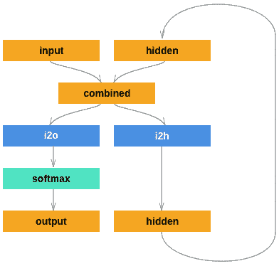
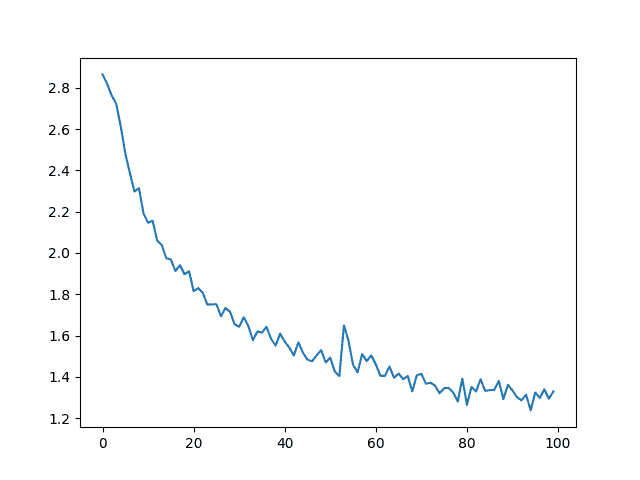
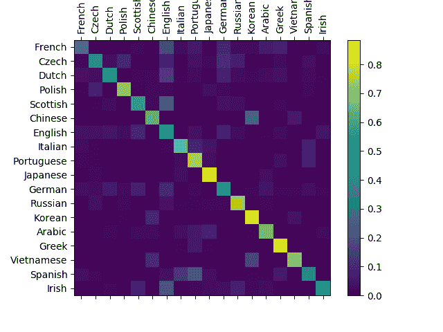

从零开始的 NLP：使用字符级 RNN 分类名称
原文：https://pytorch.org/tutorials/intermediate/char_rnn_classification_tutorial.html
作者： Sean Robertson
我们将建立和训练基本的字符级 RNN 对单词进行分类。 本教程与以下两个教程一起，展示了如何“从头开始”进行 NLP 建模的预处理数据，特别是不使用torchtext的许多便利函数，因此您可以了解 NLP 建模的预处理如何在低水平上工作。
字符级 RNN 将单词作为一系列字符读取-在每个步骤输出预测和“隐藏状态”，将其先前的隐藏状态输入到每个下一步。 我们将最终的预测作为输出，即单词属于哪个类别。
具体来说，我们将训练来自 18 种起源语言的数千种姓氏，并根据拼写方式预测名称的来源：
$ python predict.py Hinton
(-0.47) Scottish
(-1.52) English
(-3.57) Irish
$ python predict.py Schmidhuber
(-0.19) German
(-2.48) Czech
(-2.68) Dutch
推荐读物：
我假设您至少已经安装了 PyTorch，Python 和 Tensors：
- 安装说明
- 使用 PyTorch 进行深度学习：60 分钟的突击通常开始使用 PyTorch
- 使用示例学习 PyTorch
- PyTorch（面向以前的 Torch 用户）（如果您以前是 Lua Torch 用户）
了解 RNN 及其工作方式也将很有用：
- 《循环神经网络的不合理有效性》显示了许多现实生活中的例子
- 《了解 LSTM 网络》特别是关于 LSTM 的，但一般来说也有关 RNN 的
准备数据
注意
从的下载数据，并将其提取到当前目录。
data/names目录中包含 18 个文本文件，名称为[Language].txt。 每个文件包含一堆名称，每行一个名称，大多数是罗马化的（但我们仍然需要从 Unicode 转换为 ASCII）。
我们将得到一个字典，其中列出了每种语言的名称列表{language: [names ...]}。 通用变量“类别”和“行”（在本例中为语言和名称）用于以后的扩展。
from __future__ import unicode_literals, print_function, division
from io import open
import glob
import os
def findFiles(path): return glob.glob(path)
print(findFiles('data/names/*.txt'))
import unicodedata
import string
all_letters = string.ascii_letters + " .,;'"
n_letters = len(all_letters)
# Turn a Unicode string to plain ASCII, thanks to https://stackoverflow.com/a/518232/2809427
def unicodeToAscii(s):
return ''.join(
c for c in unicodedata.normalize('NFD', s)
if unicodedata.category(c) != 'Mn'
and c in all_letters
)
print(unicodeToAscii('Ślusàrski'))
# Build the category_lines dictionary, a list of names per language
category_lines = {}
all_categories = []
# Read a file and split into lines
def readLines(filename):
lines = open(filename, encoding='utf-8').read().strip().split('\n')
return [unicodeToAscii(line) for line in lines]
for filename in findFiles('data/names/*.txt'):
category = os.path.splitext(os.path.basename(filename))[0]
all_categories.append(category)
lines = readLines(filename)
category_lines[category] = lines
n_categories = len(all_categories)
出：
['data/names/French.txt', 'data/names/Czech.txt', 'data/names/Dutch.txt', 'data/names/Polish.txt', 'data/names/Scottish.txt', 'data/names/Chinese.txt', 'data/names/English.txt', 'data/names/Italian.txt', 'data/names/Portuguese.txt', 'data/names/Japanese.txt', 'data/names/German.txt', 'data/names/Russian.txt', 'data/names/Korean.txt', 'data/names/Arabic.txt', 'data/names/Greek.txt', 'data/names/Vietnamese.txt', 'data/names/Spanish.txt', 'data/names/Irish.txt']
Slusarski
现在我们有了category_lines，这是一个字典，将每个类别（语言）映射到行（名称）列表。 我们还跟踪了all_categories（只是语言列表）和n_categories，以供以后参考。
print(category_lines['Italian'][:5])
出：
['Abandonato', 'Abatangelo', 'Abatantuono', 'Abate', 'Abategiovanni']
将名称转换为张量
现在我们已经组织了所有名称，我们需要将它们转换为张量以使用它们。
为了表示单个字母，我们使用大小为<1 x n_letters>的单热向量。 单热向量用 0 填充，但当前字母的索引处的数字为 1，例如 "b" = <0 1 0 0 0 ...>。
为了制造一个单词，我们将其中的一些连接成 2D 矩阵<line_length x 1 x n_letters>。
额外的 1 维是因为 PyTorch 假定所有内容都是成批的-在这里我们仅使用 1 的批量大小。
import torch
# Find letter index from all_letters, e.g. "a" = 0
def letterToIndex(letter):
return all_letters.find(letter)
# Just for demonstration, turn a letter into a <1 x n_letters> Tensor
def letterToTensor(letter):
tensor = torch.zeros(1, n_letters)
tensor[0][letterToIndex(letter)] = 1
return tensor
# Turn a line into a <line_length x 1 x n_letters>,
# or an array of one-hot letter vectors
def lineToTensor(line):
tensor = torch.zeros(len(line), 1, n_letters)
for li, letter in enumerate(line):
tensor[li][0][letterToIndex(letter)] = 1
return tensor
print(letterToTensor('J'))
print(lineToTensor('Jones').size())
出：
tensor([[0., 0., 0., 0., 0., 0., 0., 0., 0., 0., 0., 0., 0., 0., 0., 0., 0., 0.,
0., 0., 0., 0., 0., 0., 0., 0., 0., 0., 0., 0., 0., 0., 0., 0., 0., 1.,
0., 0., 0., 0., 0., 0., 0., 0., 0., 0., 0., 0., 0., 0., 0., 0., 0., 0.,
0., 0., 0.]])
torch.Size([5, 1, 57])
创建网络
在进行自动微分之前，在 Torch 中创建一个循环神经网络涉及在多个时间步长上克隆层的参数。 层保留了隐藏状态和梯度，这些层现在完全由图本身处理。 这意味着您可以非常“纯”的方式将 RNN 用作常规前馈层。
该 RNN 模块（主要从面向 Torch 用户的 PyTorch 教程复制）只有两个线性层，它们在输入和隐藏状态下运行，在输出之后是LogSoftmax层。

import torch.nn as nn
class RNN(nn.Module):
def __init__(self, input_size, hidden_size, output_size):
super(RNN, self).__init__()
self.hidden_size = hidden_size
self.i2h = nn.Linear(input_size + hidden_size, hidden_size)
self.i2o = nn.Linear(input_size + hidden_size, output_size)
self.softmax = nn.LogSoftmax(dim=1)
def forward(self, input, hidden):
combined = torch.cat((input, hidden), 1)
hidden = self.i2h(combined)
output = self.i2o(combined)
output = self.softmax(output)
return output, hidden
def initHidden(self):
return torch.zeros(1, self.hidden_size)
n_hidden = 128
rnn = RNN(n_letters, n_hidden, n_categories)
要运行此网络的步骤，我们需要传递输入（在本例中为当前字母的张量）和先前的隐藏状态（首先将其初始化为零）。 我们将返回输出（每种语言的概率）和下一个隐藏状态（我们将其保留用于下一步）。
input = letterToTensor('A')
hidden =torch.zeros(1, n_hidden)
output, next_hidden = rnn(input, hidden)
为了提高效率，我们不想为每个步骤创建一个新的张量，因此我们将使用lineToTensor而不是letterToTensor并使用切片。 这可以通过预先计算一批张量来进一步优化。
input = lineToTensor('Albert')
hidden = torch.zeros(1, n_hidden)
output, next_hidden = rnn(input[0], hidden)
print(output)
出：
tensor([[-2.8934, -2.7991, -2.8549, -2.8915, -2.9122, -2.9010, -2.8979, -2.8875,
-2.8256, -2.8792, -2.8712, -2.8465, -2.9582, -3.0171, -2.8308, -2.9629,
-2.9233, -2.8979]], grad_fn=<LogSoftmaxBackward>)
如您所见，输出为<1 x n_categories>张量，其中每个项目都是该类别的可能性（可能性更大）。
训练
准备训练
在接受训练之前，我们应该做一些辅助函数。 首先是解释网络的输出，我们知道这是每个类别的可能性。 我们可以使用Tensor.topk获得最大值的索引：
def categoryFromOutput(output):
top_n, top_i = output.topk(1)
category_i = top_i[0].item()
return all_categories[category_i], category_i
print(categoryFromOutput(output))
出：
('Czech', 1)
我们还将希望有一种快速的方法来获取训练示例（名称及其语言）：
import random
def randomChoice(l):
return l[random.randint(0, len(l) - 1)]
def randomTrainingExample():
category = randomChoice(all_categories)
line = randomChoice(category_lines[category])
category_tensor = torch.tensor([all_categories.index(category)], dtype=torch.long)
line_tensor = lineToTensor(line)
return category, line, category_tensor, line_tensor
for i in range(10):
category, line, category_tensor, line_tensor = randomTrainingExample()
print('category =', category, '/ line =', line)
出：
category = Chinese / line = Jia
category = Korean / line = Son
category = Czech / line = Matocha
category = Dutch / line = Nifterik
category = German / line = Dreschner
category = Irish / line = Names
category = French / line = Charpentier
category = Italian / line = Carboni
category = Irish / line = Shannon
category = German / line = Adam
训练网络
现在，训练该网络所需要做的就是向它展示大量示例，进行猜测，并告诉它是否错误。
对于损失函数，nn.NLLLoss是适当的，因为 RNN 的最后一层是nn.LogSoftmax。
criterion = nn.NLLLoss()
每个训练循环将：
- 创建输入和目标张量
- 创建归零的初始隐藏状态
- 阅读每个字母
- 保存下一个字母的隐藏状态
- 比较最终输出与目标
- 反向传播
- 返回输出和损失
learning_rate = 0.005 # If you set this too high, it might explode. If too low, it might not learn
def train(category_tensor, line_tensor):
hidden = rnn.initHidden()
rnn.zero_grad()
for i in range(line_tensor.size()[0]):
output, hidden = rnn(line_tensor[i], hidden)
loss = criterion(output, category_tensor)
loss.backward()
# Add parameters' gradients to their values, multiplied by learning rate
for p in rnn.parameters():
p.data.add_(p.grad.data, alpha=-learning_rate)
return output, loss.item()
现在，我们只需要运行大量示例。 由于train函数返回输出和损失，因此我们可以打印其猜测并跟踪作图的损失。 因为有 1000 个示例，所以我们仅打印每个print_every示例，并对损失进行平均。
import time
import math
n_iters = 100000
print_every = 5000
plot_every = 1000
# Keep track of losses for plotting
current_loss = 0
all_losses = []
def timeSince(since):
now = time.time()
s = now - since
m = math.floor(s / 60)
s -= m * 60
return '%dm %ds' % (m, s)
start = time.time()
for iter in range(1, n_iters + 1):
category, line, category_tensor, line_tensor = randomTrainingExample()
output, loss = train(category_tensor, line_tensor)
current_loss += loss
# Print iter number, loss, name and guess
if iter % print_every == 0:
guess, guess_i = categoryFromOutput(output)
correct = '✓' if guess == category else '✗ (%s)' % category
print('%d %d%% (%s) %.4f %s / %s %s' % (iter, iter / n_iters * 100, timeSince(start), loss, line, guess, correct))
# Add current loss avg to list of losses
if iter % plot_every == 0:
all_losses.append(current_loss / plot_every)
current_loss = 0
出：
5000 5% (0m 15s) 2.5667 Ly / Chinese ✗ (Vietnamese)
10000 10% (0m 26s) 2.3171 Rocha / Japanese ✗ (Portuguese)
15000 15% (0m 37s) 2.2941 Gouveia / Spanish ✗ (Portuguese)
20000 20% (0m 49s) 1.3015 Lippi / Italian ✓
25000 25% (1m 1s) 0.7693 Thuy / Vietnamese ✓
30000 30% (1m 13s) 1.9341 Murray / Arabic ✗ (Scottish)
35000 35% (1m 25s) 2.3633 Busto / Scottish ✗ (Italian)
40000 40% (1m 38s) 1.0401 Chung / Chinese ✗ (Korean)
45000 45% (1m 50s) 0.0499 Filipowski / Polish ✓
50000 50% (2m 2s) 0.2598 Mccallum / Scottish ✓
55000 55% (2m 14s) 4.5375 Mozdzierz / German ✗ (Polish)
60000 60% (2m 26s) 1.7194 Talalihin / Irish ✗ (Russian)
65000 65% (2m 38s) 0.1150 Ziemniak / Polish ✓
70000 70% (2m 51s) 1.8548 Pharlain / Scottish ✗ (Irish)
75000 75% (3m 3s) 2.1362 Prehatney / Russian ✗ (Czech)
80000 80% (3m 15s) 0.4166 Leclerc / French ✓
85000 85% (3m 27s) 1.4189 Elford / English ✓
90000 90% (3m 39s) 2.1959 Gagnon / Scottish ✗ (French)
95000 95% (3m 51s) 0.1622 Bukoski / Polish ✓
100000 100% (4m 3s) 1.3180 Faucheux / French ✓
绘制结果
从all_losses绘制历史损失可显示网络学习情况：
import matplotlib.pyplot as plt
import matplotlib.ticker as ticker
plt.figure()
plt.plot(all_losses)

评估结果
为了查看网络在不同类别上的表现如何，我们将创建一个混淆矩阵，为每种实际语言（行）指示网络猜测（列）哪种语言。 为了计算混淆矩阵，使用evaluate()通过网络运行一堆样本，该样本等于train()减去反向传播器。
# Keep track of correct guesses in a confusion matrix
confusion = torch.zeros(n_categories, n_categories)
n_confusion = 10000
# Just return an output given a line
def evaluate(line_tensor):
hidden = rnn.initHidden()
for i in range(line_tensor.size()[0]):
output, hidden = rnn(line_tensor[i], hidden)
return output
# Go through a bunch of examples and record which are correctly guessed
for i in range(n_confusion):
category, line, category_tensor, line_tensor = randomTrainingExample()
output = evaluate(line_tensor)
guess, guess_i = categoryFromOutput(output)
category_i = all_categories.index(category)
confusion[category_i][guess_i] += 1
# Normalize by dividing every row by its sum
for i in range(n_categories):
confusion[i] = confusion[i] / confusion[i].sum()
# Set up plot
fig = plt.figure()
ax = fig.add_subplot(111)
cax = ax.matshow(confusion.numpy())
fig.colorbar(cax)
# Set up axes
ax.set_xticklabels([''] + all_categories, rotation=90)
ax.set_yticklabels([''] + all_categories)
# Force label at every tick
ax.xaxis.set_major_locator(ticker.MultipleLocator(1))
ax.yaxis.set_major_locator(ticker.MultipleLocator(1))
# sphinx_gallery_thumbnail_number = 2
plt.show()

您可以从主轴上挑出一些亮点，以显示它猜错了哪些语言，例如中文（朝鲜语）和西班牙语（意大利语）。 它似乎与希腊语搭配得很好，而与英语搭配得很差（可能是因为与其他语言重叠）。
在用户输入上运行
def predict(input_line, n_predictions=3):
print('\n> %s' % input_line)
with torch.no_grad():
output = evaluate(lineToTensor(input_line))
# Get top N categories
topv, topi = output.topk(n_predictions, 1, True)
predictions = []
for i in range(n_predictions):
value = topv[0][i].item()
category_index = topi[0][i].item()
print('(%.2f) %s' % (value, all_categories[category_index]))
predictions.append([value, all_categories[category_index]])
predict('Dovesky')
predict('Jackson')
predict('Satoshi')
出：
> Dovesky
(-0.82) Russian
(-1.06) Czech
(-2.22) Polish
> Jackson
(-0.63) English
(-1.75) Scottish
(-1.75) Russian
> Satoshi
(-0.97) Japanese
(-1.50) Polish
(-2.13) Italian
实际 PyTorch 存储库中的脚本的最终版本将上述代码分成几个文件：
data.py（加载文件）model.py（定义 RNN）train.py（进行训练）predict.py（使用命令行参数运行predict()）server.py（通过bottle.py将预测用作 JSON API）
运行train.py训练并保存网络。
使用名称运行predict.py以查看预测：
$ python predict.py Hazaki
(-0.42) Japanese
(-1.39) Polish
(-3.51) Czech
运行server.py并访问http://localhost:5533/Yourname以获取预测的 JSON 输出。
练习
- 尝试使用行 -> 类别的其他数据集，例如：
- 任何单词 -> 语言
- 名称 -> 性别
- 角色名称 -> 作家
- 页面标题 -> 博客或 subreddit
- 通过更大和/或形状更好的网络获得更好的结果
- 添加更多线性层
- 尝试
nn.LSTM和nn.GRU层 - 将多个这些 RNN 合并为更高级别的网络
脚本的总运行时间：（4 分钟 15.239 秒）
下载 Python 源码：char_rnn_classification_tutorial.py
下载 Jupyter 笔记本：char_rnn_classification_tutorial.ipynb
由 Sphinx 画廊生成的画廊